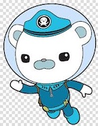
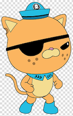
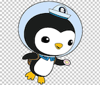
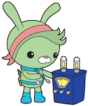
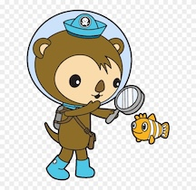
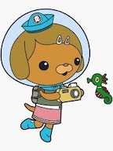
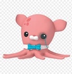
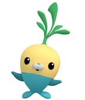

| name | animal | occupation | characteristics | quirks |
|---|---|---|---|---|
| captain barnacles  |
he is a polar bear | captain barnacles main role is being the leader of the group | one characteristic to summarize his character is brave | he plays the accordian, but is surprising good at it |
| kwazii  |
he is a cat but thinks of himself as a pirate because of his ear missing a part | kwazii is considered a lieutenant, but mainly acts as a pirate | his main characteristic is daring/adventurous because he always takes risks | has a mysterious pirate past and he always uses pirate lingo such as, "ahoy" and "shiver me timbers" |
| peso  |
he is a pengin | peso is the medic/doctor on the boat | he is described as caring and gentle because he always worries abouts others safety | he acts as extremely timid, but when it comes to helping others, he becomes extremely brave |
| tweak  |
she is a bunny | she is the engineer | tweak is known as brilliant for her fixings abilities and her intelligence | she always calls people by nicknames (ex: calls captain barnacles "cap") |
| shellington  |
he is a sea otter | shellington is a bioligist | he is also described as scatterbrained/forgetful since he always accidentally breaks beakers in the lab | he is accident-prone and gets distracted by research. additionally, he is clumsy which is why he almost |
| dashi  |
she is a dog | she is the photographer and sometimes assists shellington in the science labs | however, unalike shellington, she is well organized | she is a neat freak and is constantly taking photos of people, animals, and plants |
| professor inkling  |
he is an octopus, but more specificaly, a dumbo octopus | he is the founder of the group and a librarian | he is known as wise for his age and his knowledge. additonally, he works in the library and spends his free time reading | always says "fascinating!" |
| tunip  |
he is a vegimal which is not a real thing | he is the cook/gardener along with the other vegimals | tunip is extremely nurturing and kind, and always makes sure to give others food, keeping them well fed | obsessed with making kelp cakes |